Fitting various probability models
[1]:
import sys
sys.path.append("D:/Study/Python/Projects/Paul Project/Deployment/yup/probabilistic_model")
[2]:
from probabilistic_model import *
Dataset Format
Here, we have used data from paper: https://www.sciencedirect.com/science/article/pii/S2666359721000378
[4]:
def df_processor(df):
df_1 = df.sort_values(by="Temperature", ascending=True).reset_index(drop=True)
df_dict = {temp: df_1[df_1["Temperature"] == temp].reset_index(drop=True) for temp in df_1["Temperature"].unique()}
df_1['Inverse_Temp'] = 11604.53 / (df_1['Temperature'] + 273.16) # Convert to Kelvin
df_1['Ln_Mpa'] = np.log(df_1['Mpa']) # Log transformation
return df_1, df_dict
[ ]:
data = pd.read_excel("path/to/data")
df,df_dict = df_processor(data)
[7]:
X_values = df['Inverse_Temp'].values
Y_values = df['Mpa'].values
Plot Utils
[10]:
def plot_different_cdf(model,cdf=[0.5,0.9,0.1,0.99,0.01]):
temperature_values = np.linspace(10, 600, 100)
fig, ax = plt.subplots(figsize=(8,6))
ax.scatter(df_1["Temperature"], df_1["Mpa"], edgecolors='black', alpha=0.7, s=30, label=f"Vendor 1")
ax.scatter(df_2["Temperature"], df_2["Mpa"], edgecolors='black', alpha=0.7, s=30, label=f"Vendor 2")
for i in range(len(cdf)):
ys_predicted_cdf = model.predict(cdf[i],temperature_values)
ax.plot(temperature_values, ys_predicted_cdf, linestyle="-", linewidth=1, label=f"Predicted YS (CDF={cdf[i]})")
ax.set_xlabel("Temperature (°C)", fontsize=12, fontweight="bold")
ax.set_ylabel("Yield Stress (YS)", fontsize=12, fontweight="bold")
ax.set_title("Yield Stress vs. Temperature Comparison", fontsize=14, fontweight="bold")
ax.legend()
fig.show()
[11]:
def line_fit_plot(model):
plt.figure(figsize=(10, 6))
for temp in df_dict.keys():
data = df_dict[temp]["Mpa"].values
data = np.sort(data)
try:
sigma_values, ln_sigma_values,sigma_fit_log, y_fit = model.transform(data)
except:
sigma_values, ln_sigma_values,sigma_fit_log, y_fit = model.transform(data, temp)
plt.scatter(sigma_values, ln_sigma_values, label=f"Temp {temp}")
plt.plot(sigma_fit_log, y_fit, linestyle='-')
plt.title(f" {model.name} Probability Plot with Fitted Line", fontsize=14, fontweight="bold")
plt.xlabel("ln(Data)", fontsize=12)
plt.ylabel("Standard Normal Quantile", fontsize=12)
plt.grid(True, linestyle='--', alpha=0.6)
plt.legend(fontsize=10)
plt.tight_layout()
plt.show()
Weibull Model
[12]:
weibull = WeibullModel(X_values, Y_values)
print(f"Shape: {weibull.shape:.4f}")
print(f"Intercept (k): {weibull.intercept:.4f}")
print(f"Slope (m): {weibull.slope:.4f}")
c:\Users\mohit\AppData\Local\Programs\Python\Python311\Lib\site-packages\scipy\stats\_continuous_distns.py:2584: RuntimeWarning: overflow encountered in power
return np.log(c) + sc.xlogy(c - 1, x) - pow(x, c)
Shape: 26.2186
Intercept (k): 5.8982
Slope (m): 0.0233
[13]:
plot_different_cdf(weibull)
C:\Users\mohit\AppData\Local\Temp\ipykernel_18340\2357539701.py:17: UserWarning: FigureCanvasAgg is non-interactive, and thus cannot be shown
fig.show()
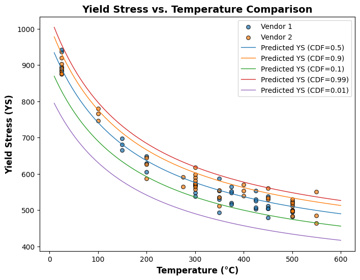
[14]:
line_fit_plot(weibull)
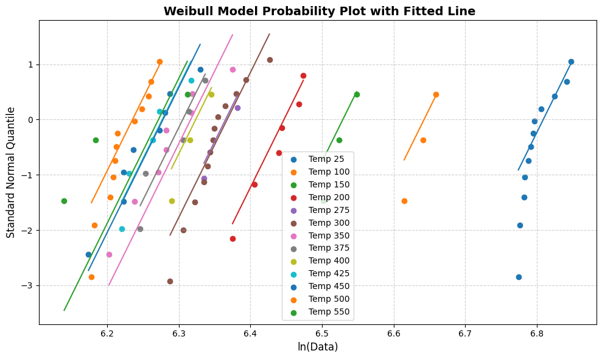
LogNormal Model
[15]:
lognormal = LognormalModel(X_values, Y_values)
print(f"Sigma: {lognormal.sigma:.4f}")
print(f"Intercept (k): {lognormal.k:.4f}")
print(f"Slope (m): {lognormal.m:.4f}")
Sigma: 0.0386
Intercept (k): 5.8598
Slope (m): 0.0242
[12]:
plot_different_cdf(lognormal)
C:\Users\mohit\AppData\Local\Temp\ipykernel_18124\2357539701.py:17: UserWarning: FigureCanvasAgg is non-interactive, and thus cannot be shown
fig.show()
[13]:
line_fit_plot(lognormal)
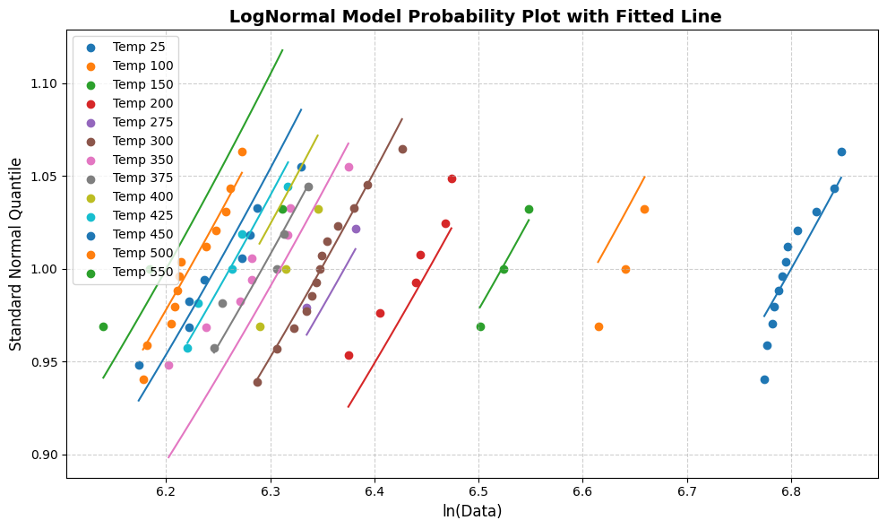
Normal Model:
[16]:
normal = NormalModel(X_values, Y_values)
print(f"Sigma: {normal.sigma:.4f}")
print(f"Intercept (k): {normal.intercept:.4f}")
print(f"Slope (m): {normal.slope:.4f}")
Sigma: 24.8564
Intercept (k): 246.9860
Slope (m): 16.4714
[15]:
plot_different_cdf(normal)
C:\Users\mohit\AppData\Local\Temp\ipykernel_18124\2357539701.py:17: UserWarning: FigureCanvasAgg is non-interactive, and thus cannot be shown
fig.show()
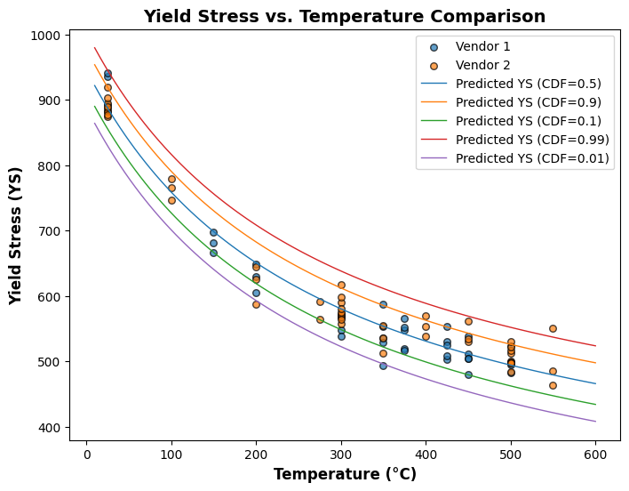
[16]:
line_fit_plot(normal)
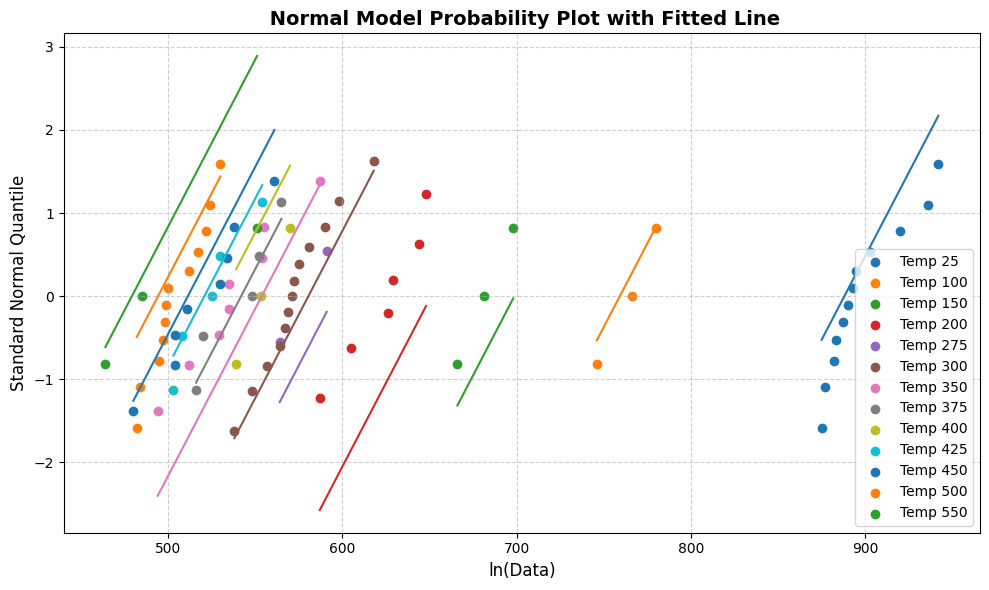
Weibull (3-Parameters)
[17]:
wb3 = WeibullModel3(X_values, Y_values)
print(f"Shape: {wb3.shape:.4f}")
print(f"Delta: {wb3.delta:.4f}")
print(f"Intercept (k): {wb3.intercept:.4f}")
print(f"Slope (m): {wb3.slope:.4f}")
Shape: 23.4686
Delta: 53.4825
Intercept (k): 5.7600
Slope (m): 0.0253
[18]:
plot_different_cdf(wb3)
C:\Users\mohit\AppData\Local\Temp\ipykernel_18124\2357539701.py:17: UserWarning: FigureCanvasAgg is non-interactive, and thus cannot be shown
fig.show()
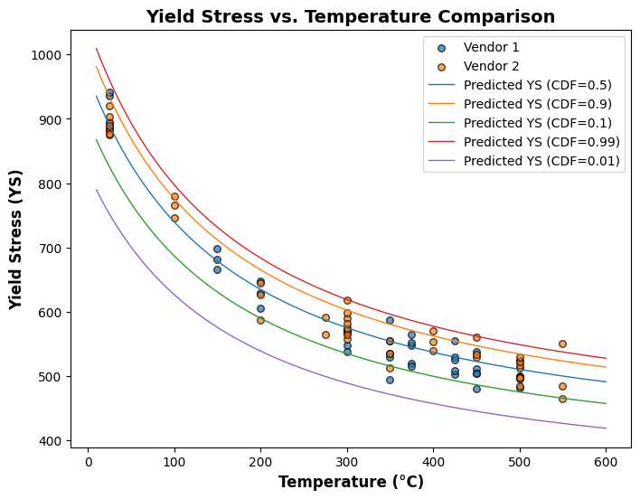
[19]:
line_fit_plot(wb3)
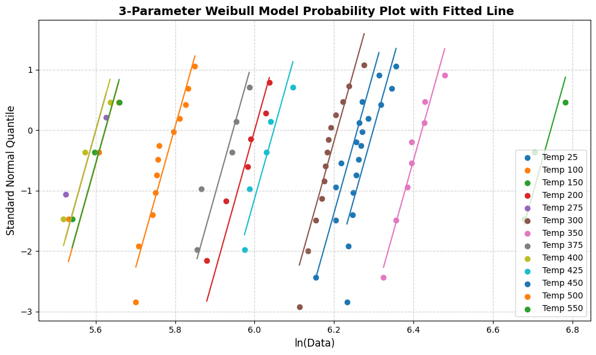
LogNormal (3-Parameters)
[20]:
lnm = LognormalModel3(X_values,Y_values)
print(f"Intercept (k): {lnm.k:.4f}")
print(f"Slope (m): {lnm.m:.4f}")
print(f"sigma: {lnm.sigma:.4f}")
print(f"gamma: {lnm.gamma:.4f}")
Intercept (k): 5.8574
Slope (m): 0.0242
sigma: 0.0387
gamma: 0.9896
[45]:
plot_different_cdf(lnm)
C:\Users\mohit\AppData\Local\Temp\ipykernel_25556\2357539701.py:17: UserWarning: FigureCanvasAgg is non-interactive, and thus cannot be shown
fig.show()
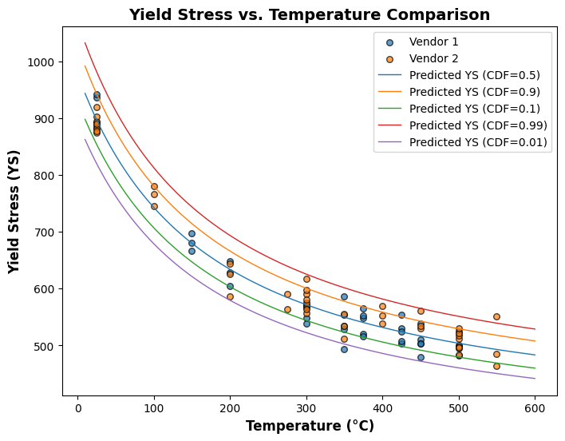
[46]:
line_fit_plot(lnm)
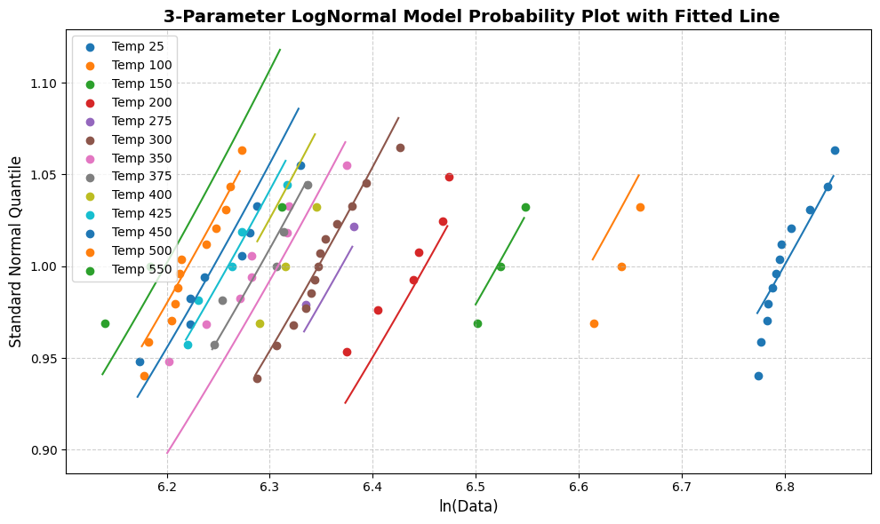
Gumbell Model:
[56]:
gb = Gumbell(X_values, Y_values)
print(f"Intercept (u): {gb.intercept:.4f}")
print(f"Slope (w): {gb.slope:.4f}")
print(f"Gumbel Scale (sigma): {gb.scale:.4f}")
Intercept (u): 233.0584
Slope (w): 16.5455
Gumbel Scale (sigma): 24.5750
[52]:
plot_different_cdf(gb)
C:\Users\mohit\AppData\Local\Temp\ipykernel_25556\2357539701.py:17: UserWarning: FigureCanvasAgg is non-interactive, and thus cannot be shown
fig.show()
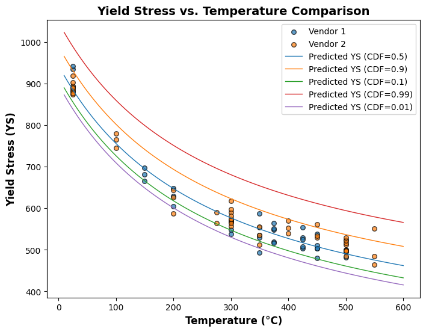
[57]:
line_fit_plot(gb)
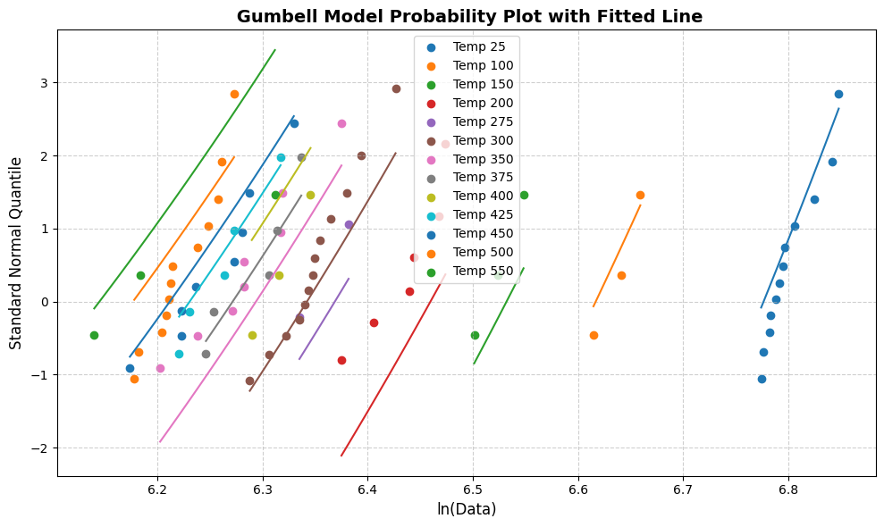
Exponential:
[72]:
exp = Exponential(X_values, Y_values)
print(f"Intercept (u): {exp.intercept:.4f}")
print(f"Slope (w): {exp.slope:.4f}")
Intercept (u): 5.8613
Slope (w): 0.0241
[73]:
plot_different_cdf(exp)
C:\Users\mohit\AppData\Local\Temp\ipykernel_25556\2357539701.py:17: UserWarning: FigureCanvasAgg is non-interactive, and thus cannot be shown
fig.show()
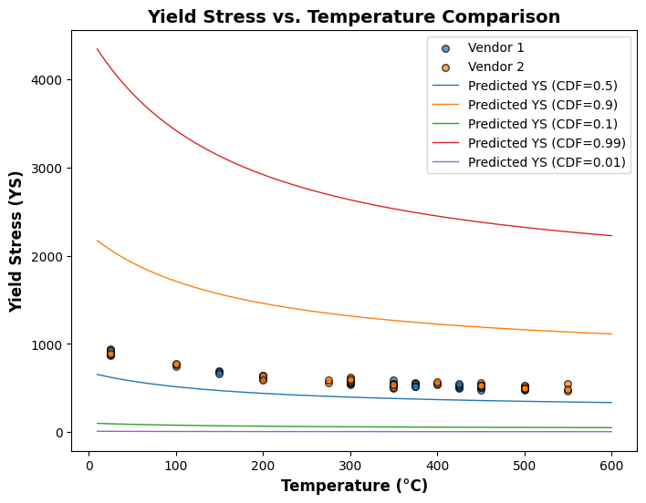
[74]:
line_fit_plot(exp)
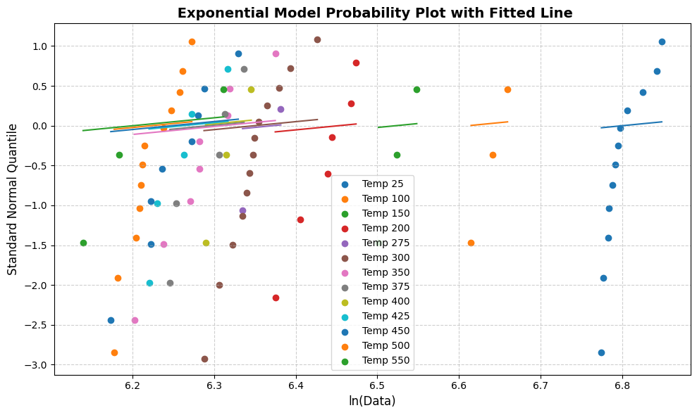
Gamma
[78]:
gm = Gamma(X_values, Y_values)
print(f"[Gamma Fit] Shape: {gm.shape:.4f}")
print(f"Intercept (u): {gm.intercept:.4f}")
print(f"Slope (w): {gm.slope:.4f}")
c:\Users\mohit\AppData\Local\Programs\Python\Python311\Lib\site-packages\numpy\core\_methods.py:176: RuntimeWarning: overflow encountered in multiply
x = um.multiply(x, x, out=x)
[Gamma Fit] Shape: 433.9026
Intercept (u): -0.2116
Slope (w): 0.0241
[79]:
plot_different_cdf(gm)
C:\Users\mohit\AppData\Local\Temp\ipykernel_25556\2357539701.py:17: UserWarning: FigureCanvasAgg is non-interactive, and thus cannot be shown
fig.show()
[80]:
line_fit_plot(gm)
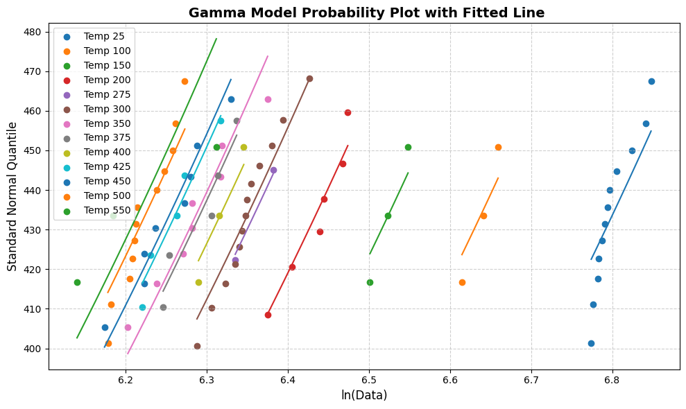
Weibull (Power Law)
[19]:
wb = WeibullModel(np.log(df['Temperature'].values), Y_values, power_law=True)
print(f"Shape: {wb.shape:.4f}")
print(f"Intercept (u): {wb.intercept:.4f}")
print(f"Slope (w): {wb.slope:.4f}")
Shape: 22.7048
Intercept (u): 7.4732
Slope (w): -0.1950
[20]:
plot_different_cdf(wb)
C:\Users\mohit\AppData\Local\Temp\ipykernel_18340\2357539701.py:17: UserWarning: FigureCanvasAgg is non-interactive, and thus cannot be shown
fig.show()
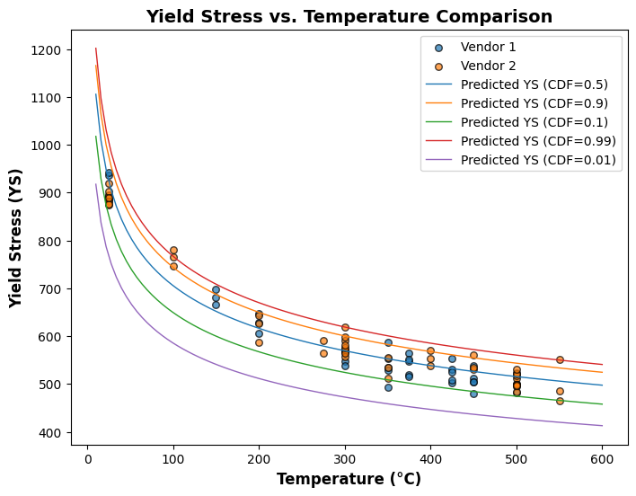
[83]:
line_fit_plot(wb)
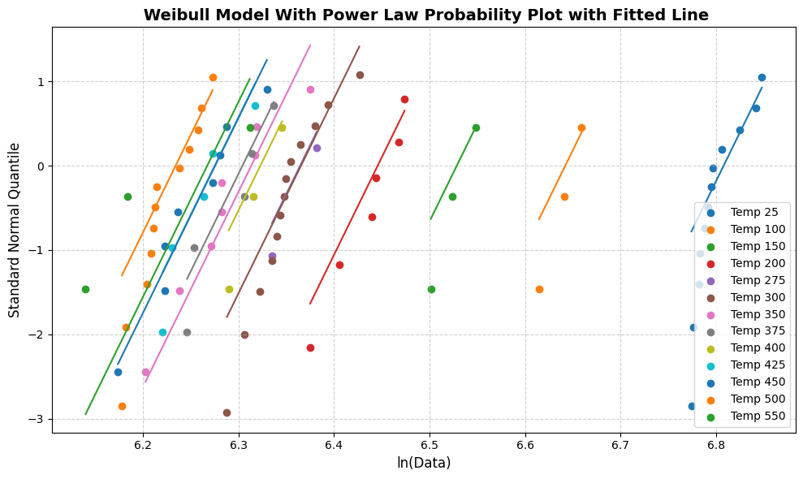
Lognormal (Power Law)
[37]:
lm = LognormalModel(np.log(df['Temperature'].values), Y_values, power_law=True)
print(f"Sigma: {lm.sigma:.4f}")
print(f"Intercept (k): {lm.k:.4f}")
print(f"Slope (m): {lm.m:.4f}")
Sigma: 0.0439
Intercept (k): 7.4442
Slope (m): -0.1938
[38]:
plot_different_cdf(lm)
C:\Users\mohit\AppData\Local\Temp\ipykernel_18124\2357539701.py:17: UserWarning: FigureCanvasAgg is non-interactive, and thus cannot be shown
fig.show()
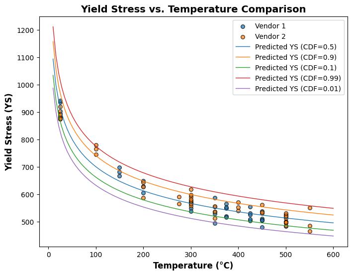
[39]:
line_fit_plot(lm)
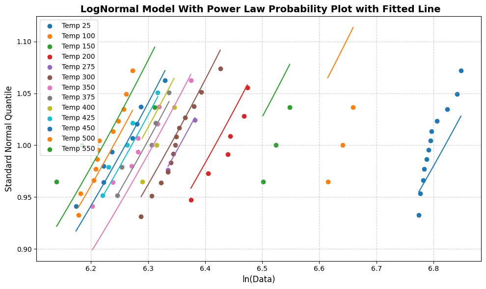
[ ]: